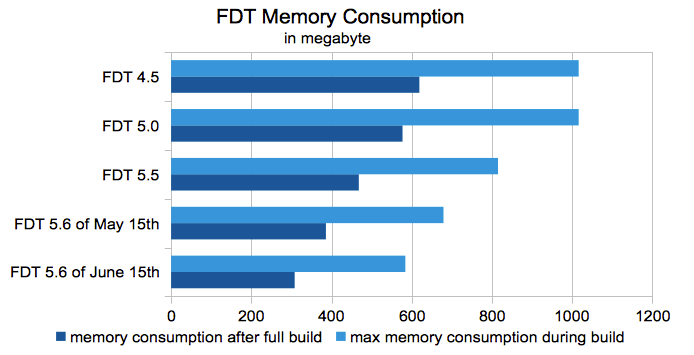

FDT 5.6 Released - A Focus On Performance
During the development of this release we really went deep down to FDT's roots to improve its performance. What we achieved is a massive performance optimization for nearly every situation and project, especially big gaming projects.
Release Notes
While we steadily added loads of new features, FDT's memory consumption has declined with every release. One of the greatest achievements of FDT 5.6 is its cutting-edge memory consumtion. Since FDT 4.5, memory consumption has been cut in less than half, the build time has been reduced, and thanks to the partial parser, autocompletion is way faster even in big classes.

Needless to say, FDT 5.6 also includes a lot of bug fixes as well.
See JIRA and the annoucement on our blog for more info.Selected Features
- * Support For Multiple Profiles When Using AIR Applications
- * A Way To Customize Arguements Sent To ADT
- * A Way To Customize Arguements Sent To ADL
- * Allow For Custom JVM Arguments For External SWF Viewer
- * Ability To Prevent An Application From Launching After Compiling
- * Have All AIR Platforms Available In One Project Type & New Project Type 'AIR All'
- * Ant Task for Export (Publish) Application
- * Notify Customer If The Quicktrace Template Is Missing
- * Provide Option To Prevent ADL Launch After Compiling
- * Have Add Semicolon Quick Fix Be In FDT Free
Updating
When updating FDT, you may encoutner other Eclipse plugins that also ask for an update - some may even show up as errors. To be safe, stick to just updating FDT. This is what we've primarily testied against and it works correctly.